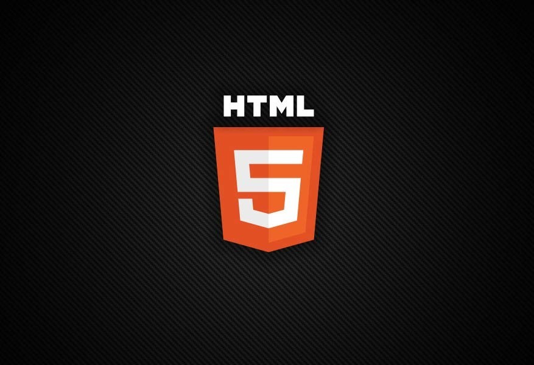

Sobre HTML
HTML significa Hypertext Markup Language. Ele permite que os usuários criem e estruturem seções, parágrafos, cabeçalhos e links para páginas da internet ou aplicações. O HTML não é uma linguagem de programação, isso significa que não pode ser usado para criar funcionalidades dinâmicas. Entretanto, o HTML possibilita a organização e formatação de documentos, similar ao Microsoft Word. Ao trabalhar com HTML simplesmente codificamos estruturas (tags e atributos) para marcar a página de um site.
Clique aqui para mais informações